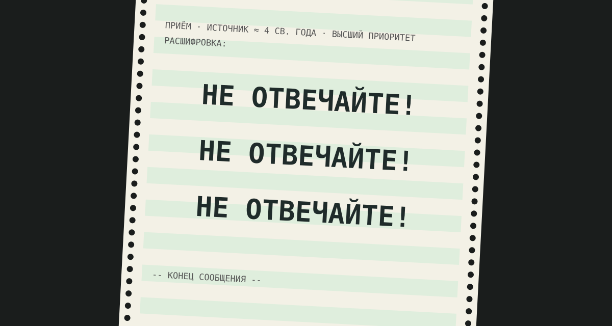

Задача трёх тел · глава 23 из 35
Красный берег. VI

Кратко
Е Вэньцзе выходит замуж за Ян Вэйнина. Спустя годы, на ночном дежурстве, она принимает сигнал высшей категории: «Не отвечайте! Не отвечайте! Не отвечайте!». Пацифист с другой планеты предупреждает Землю: если она ответит, её местоположение станет известно, и его мир придёт её завоевать. Е вычисляет, что источник — примерно в четырёх световых годах, и узнаёт о Трисолярисе. И она отвечает — направляя сигнал через Солнце: «Приходите! Я помогу вам завоевать этот мир. Наша цивилизация уже не способна решить свои проблемы сама». Потом теряет сознание и узнаёт, что беременна.
Главные моменты
- «Не отвечайте!» — самое известное послание романа.
- Е одна знает о существовании инопланетного разума.
- Её ответ — приглашение завоевать Землю.
- Беременность: в тот же миг решается и будущее её дочери.
Значение
Значение главы может забегать вперёд — показать
Центральное событие книги: судьба человечества решена одним человеком за пультом, на основании личного опыта предательства и жестокости. Читатель понимает теперь, откуда флот, игра и самоубийства.
Наука в этой главе
- Альфа Центавра отчасти правда
- Солнце и радиосигналы вымысел
- Послания внеземным цивилизациям правда
- Молчание Вселенной отчасти правда